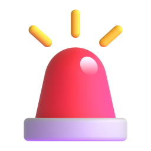
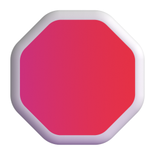
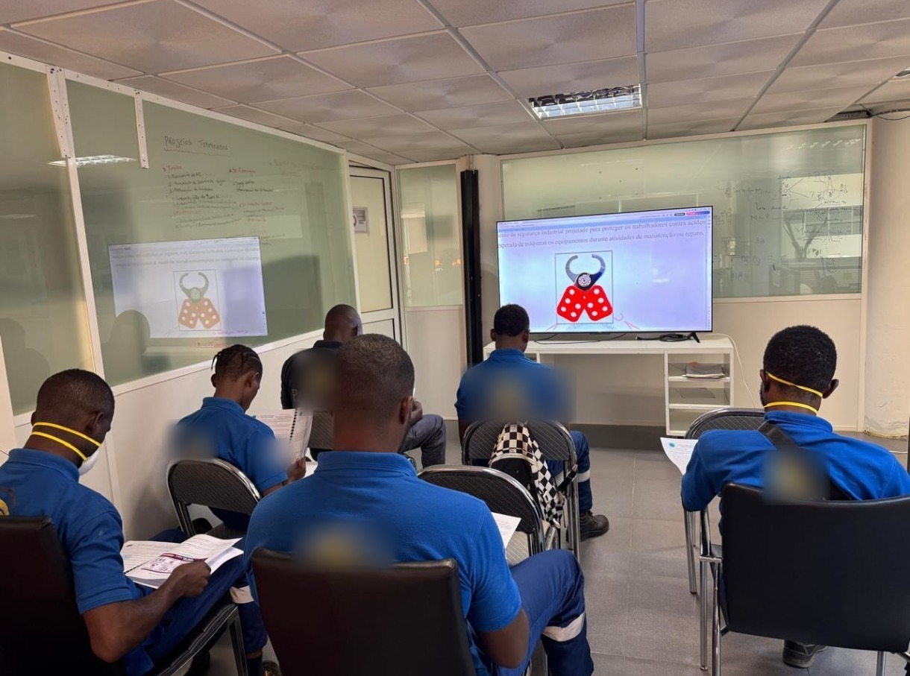

Piège
Policier
Terrain
Humain
HSE · QHSE · TERRAIN
15 ERREURS
DU DÉBUTANT HSE
de la théorie au terrain
Santé
Sécurité
Environnement

La belle théorie
Les manuels
ERREURS CLASSIQUES
→

La vraie vie du terrain
État d'esprit d'expert
 Connaissances impeccables
Connaissances impeccables Certifications prestigieuses
Certifications prestigieuses
“
Le terrain fonctionne souvent différemment.
L'ÉCOLE⚡
 LE TERRAIN
LE TERRAINfriction totale
4 grands axes
1
Le piège du débutant
théorie vs réalité
2
Le syndrome du policier
autorité vs influence
3
La déconnexion du terrain
bureau vs opérations
4
L'humain avant tout
relations & crédibilité
1
PARTIE 1 / 4
Le piège du débutant
Théorie vs réalité
 Semaine 1
Semaine 1« On va tout changer ! »
Résistance
Conflits
Crédibilité : 0
Rien de magique

Changement durable
=

Stratégie
+
Écoute
+
Patience
2
PARTIE 2 / 4
Le syndrome du policier
Autorité vs influence
Le novice « policier »
Sanctionner
Crier
Imposer
Menacer
REJET TOTAL
VS
L'expert « coach »
Prévenir
Accompagner
Influencer
Protéger
PARTENARIAT
Fixette sur les EPI
3
PARTIE 3 / 4
La déconnexion du terrain
Bureau vs opérations
Procédures parfaites sur le papier
Les vrais risques sont sur le terrain
Aller sur le terrainObserver
 Écouter les équipes
Écouter les équipes
Pourquoi ne porte-t-il pas ses gants ?
« Il veut juste désobéir »
Causes systémiques

Gants inadaptés
tâche hyper minutieuse

La chaleur
les rend insupportables

Pression de la production
pas le temps de les mettre

Le contexte dicte le comportement
rarement la mauvaise volonté
Retenez bien cette équation
COMPORTEMENT = f( CONTEXTE )
Chercher un coupable
Comprendre et améliorer l'environnement

La production, ennemie de la sécurité
Pérenniser l'usine
L'alliance intelligente

Sécurité
+

Performance
=
Durabilité
4
PARTIE 4 / 4
L'humain avant tout
Relations & crédibilité
Écoute active

Ne pas couper la parole
écouter avant de parler

Valoriser l'expérience
de ceux qui sont sur le terrain

Faire preuve de pédagogie
expliquer, pas imposer
Repérer les signaux faibles
que seules les équipes connaissent
Un beau titre, un badge tout neuf
La crédibilité se gagne
Présence

Cohérence
Humilité
Apprentissage continu
Le principe directeur absolu
COMPRENDRE
avant de
CORRIGER
L'ADN de l'expert

“
On ne protège pas durablement les personnes contre elles-mêmes, mais avec elles.
— la pensée à garder en tête
Faire la police ?
?
Bâtir la sécurité, main dans la main
Avec les équipes
Des normes aujourd'hui,
un avenir durable demain
un avenir durable demain
C'est parti pour un nouveau décryptage !
Aujourd'hui, on s'attaque à un sujet absolument
vital, mais où il est tellement facile de
trébucher au début :
la gestion de la santé,
de la sécurité et de l'environnement,
ou HSE pour les intimes.
Le but de cette exploration,
c'est tout simplement de déjouer les erreurs classiques
du débutant, et surtout,
on va voir comment adopter le véritable état
d'esprit d'un expert.
Bref, on va faire un petit voyage entre
la belle théorie des manuels et la vraie
vie du terrain.
Commençons tout de suite par poser le décor
avec cette citation qui tape vraiment dans le
mille.
On voit très souvent de jeunes professionnels
arriver avec des connaissances impeccables,
des certifications prestigieuses plein la tête.
Une fois sur place, eh bien,
le terrain fonctionne souvent d'une tout autre
manière.
C'est le choc classique :
la friction totale entre ce qu'on apprend sagement
sur les bancs de l'école et la réalité
brute des opérations quotidiennes.
Pour que ce soit super clair,
on a structuré tout ça en quatre grands
axes :
d'abord, le piège du débutant ;
ensuite, le fameux syndrome du policier ;
puis la déconnexion du terrain ;
et on terminera par le plus important :
l'humain avant tout.
On attaque donc tout de suite la première
partie :
le piège du débutant, ou le fameux choc
entre la théorie et la réalité.
En fait, quand on connaît toutes les normes
sur le bout des doigts,
c'est hyper tentant de vouloir tout révolutionner
dès la première semaine.
C'est la fausse confiance :
on se dit « on va tout changer
».
Mais attention, cette impatience a des conséquences
directes, et un peu désastreuses :
on se heurte à un mur.
Les équipes résistent immédiatement,
des conflits éclatent, et au final,
on perd toute crédibilité.
C'est mathématique :
un changement durable, ça n'a rien de magique.
Ça demande une vraie stratégie,
énormément d'écoute et pas mal de patience.
Ce qui nous amène à notre deuxième point
:
le syndrome du policier.
Autrement dit, l'autorité stricte face à la véritable
influence.
Et là, la différence d'approche est juste flagrante.
D'un côté, on a le novice qui adopte
une posture, disons-le,
un peu toxique :
il pense que son job, c'est de faire
la loi :
sanctionner, crier, imposer les choses par la
force, menacer.
Le résultat ?
C'est un rejet total.
À l'opposé, le vrai expert,
lui, agit plutôt comme un coach.
Son quotidien, c'est de prévenir,
d'accompagner, d'influencer positivement.
Bref, de protéger.
C'est une dynamique psychologique complètement
différente, vraiment basée sur le partenariat
plutôt que sur la contrainte.
De cette dynamique découle une règle d'or,
une loi absolue du leadership en sécurité :
le respect doit toujours être supérieur à la
peur.
L'intimidation, ça n'a jamais bâti une culture
solide et durable.
Parce que si les règles sont suivies juste
par peur de la punition,
qu'est-ce qui se passe quand le surveillant a
le dos tourné ?
Elles sont abandonnées direct.
La vraie adhésion repose sur le respect mutuel,
il n'y a pas de secret.
Du coup, cette fameuse hiérarchie des contrôles
prend tout son sens.
Le piège classique, c'est de faire une fixette
sur les équipements de protection individuelle,
les EPI, comme le casque ou les lunettes.
C'est le réflexe du policier.
Mais un vrai pro aborde le problème de
façon systématique, de haut en bas.
Étape un :
on essaie d'abord de supprimer le danger à
la source.
Étape deux :
on met en place des protections collectives.
Et l'équipement individuel,
ce n'est vraiment, vraiment que le tout dernier
recours.
Allez, on passe à la troisième partie :
la déconnexion du terrain,
le fameux match entre le confort du bureau
et la dure réalité des opérations.
Soyons honnêtes une seconde :
piloter la sécurité bien au chaud derrière son
écran, c'est un danger immense.
Un magnifique tableau Excel,
ça n'a jamais arrêté la chute d'un marteau
sur un chantier.
On est bien d'accord ?
On peut créer les procédures les plus parfaites
du monde sur le papier,
ça ne garantit absolument pas que les équipes
seront en sécurité.
Les vrais risques ne sont pas dans un
rapport imprimé :
ils se découvrent uniquement en allant sur le
terrain, en observant l'environnement et en écoutant
les gens qui font le boulot au quotidien.
Et ceci illustre parfaitement ce décalage ultra
dangereux entre l'illusion et la réalité.
Courir après la statistique du fameux « zéro
accident »
pour l'afficher en gros à l'accueil de l'usine,
ça cache souvent une vérité beaucoup moins jolie.
C'est ce qu'on appelle l'effet pastèque :
bien vert et rassurant à l'extérieur,
mais rouge écarlate à l'intérieur.
Cette pression des chiffres pousse à cacher les
petits incidents et à fermer les yeux sur
des dérives tolérées.
Or, ce sont exactement ces petits écarts invisibles
qui finissent par causer de vrais désastres.
Alors, ça nous amène à une question très
concrète, le genre de situation qu'on croise tous
les jours :
pourquoi cet opérateur ne porte-t-il pas ses gants
de protection ?
Face à ça, le premier réflexe du débutant,
c'est de se dire :
« Oh, il veut juste désobéir aux règles.
»
C'est un peu la solution de facilité.
Mais si on gratte un peu sous la
surface, on trouve presque à chaque fois des
causes systémiques :
les gants sont inadaptés pour une tâche hyper
minutieuse, ou alors la chaleur les rend insupportables.
Parfois, c'est l'organisation ou la pression de
la production qui fait qu'on sent qu'on n'a
pas le temps de les mettre.
Au final, ce sont les conditions réelles et
l'organisation du travail qui dictent le comportement.
C'est rarement de la simple mauvaise volonté individuelle.
C'est là qu'intervient ce changement de paradigme
fondamental.
Retenez bien cette équation :
le comportement est tout simplement fonction du
contexte.
Adopter cette vision, ça change absolument tout.
Au lieu de chercher un coupable ou de
sanctionner une personne,
la vraie mission, c'est de comprendre et d'améliorer
l'environnement global dans lequel cette personne
évolue.
C'est un vrai game changer.
Bien sûr, cet environnement inclut les réalités
et les objectifs de la boîte.
Considérer la production comme l'ennemi numéro
un de la sécurité, c'est une erreur stratégique
monumentale.
La sécurité ne doit en aucun cas ralentir
l'usine :
elle doit la pérenniser.
C'est vraiment l'alliance intelligente entre la
sécurité et la performance opérationnelle qui
crée la durabilité à long terme d'une entreprise.
Place à notre quatrième et dernière partie,
la plus cruciale de toutes :
l'humain avant tout.
Parce que finalement, tout est question de relations
et de crédibilité.
Il faut bien réaliser que ce travail s'effectue
dans un écosystème hyper complexe :
on parle des opérateurs,
des managers, de la direction,
des sous-traitants, des techniciens.
Sous-estimer l'importance de ce vaste réseau humain,
c'est une erreur fatale.
C'est la qualité du lien construit avec chacune
de ces personnes qui va dicter la réussite
ou l'échec de toute la politique de prévention.
C'est pour ça qu'il est capital de ne
jamais faire l'erreur de parler sans écouter.
Un professionnel aguerri,
ça ne coupe pas la parole.
Au contraire, ça valorise l'expérience incroyable
de ceux qui sont sur le terrain,
ça fait preuve de pédagogie,
et surtout, ça sait repérer ces fameux petits
signaux faibles que seules les équipes opérationnelles
connaissent intimement.
Tout ça, ça sert à construire une chose
invisible mais absolument vitale :
la crédibilité.
Et ça, ça ne s'achète pas avec un
beau titre ou un badge d'accès tout neuf.
La confiance se gagne jour après jour,
en étant présent sur le terrain,
en étant hyper cohérent dans ses actes,
et surtout en faisant preuve d'humilité quand
on se trompe.
C'est essentiel de rester en mode apprentissage
continu, parce que le jour où on croit
tout savoir, c'est là que le danger devient
imminent.
Si on devait vraiment tout résumer,
le principe directeur absolu,
celui qui ne souffre pas la moindre exception
sur le terrain, c'est celui-ci :
comprendre avant de corriger.
C'est vraiment l'ADN de l'expert,
à l'exact opposé des réactions instinctives et
autoritaires du débutant.
Pour refermer cette analyse,
gardons bien en tête cette pensée particulièrement
puissante :
on ne protège pas durablement les personnes contre
elles-mêmes, mais avec elles.
C'est en cultivant cette approche profondément
empathique qu'on construit une culture de prévention
vraiment indestructible.
La question décisive à se poser demain matin
en arrivant sur le site est donc toute
simple :
le but est-il de faire la police,
ou de bâtir véritablement la sécurité,
main dans la main avec les équipes ?